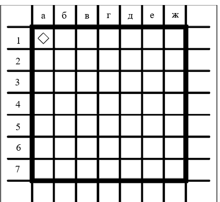

Линейный алгоритм является простейшим вариантом алгоритма. В нем одно действие следует за другим без предъявления дополнительных условий. Примером такого алгоритма можно назвать расписание уроков, в котором один урок начинается только после того как закончился предыдущий.
Рассмотрим алгоритм для исполнителя Робот. Данный исполнитель выполняет следующие команды: вверх, вниз, вправо, влево, закрасить. Зададим для него линейный алгоритм:
В результате выполнения представленного алгоритма получим следующий вид поля:
Исполнитель пройдет верхнюю часть поля, закрасит 3 клетки и вернется на исходную точку.
Если для того же алгоритма в обстановку добавить стену, то он не сможет быть выполнен - на последнем шаге произойдет столкновение исполнителя со стеной.
Данный пример показывает особенность линейных алгоритмов, заключающуюся в том, что исполнитель не может уклониться от выполнения ни одной из команд, так как алгоритм не анализирует условия.
Практически любая задача предполагает ситуацию выбора, в которой алгоритм не может быть предопределен заранее. По этой причине линейные алгоритмы находят весьма ограниченное применение.
Если в алгоритме имеется ошибка, то он не будет выполнен или приведет к не правильному результату.
В первом случае можно говорить о синтаксической ошибке, в данном случае не верной является запись команды исполнителя (например: влева, вместо влево). Такие ошибки легко исправляются при внимательном отслеживании сообщений, появляющихся на экране и внесении исправлений.
Второй вид ошибок - логические. В этом случае исполнитель выполняет алгоритм, но результат не соответствует ожиданию или на каком-либо этапе происходит отказ, т.к. команда не может быть выполнена. Такие ошибки решаются в процессе отладки.
1. Укажите где окажется исполнитель в результате выполнения алгоритма 
Тест состоит из 4 вопросов по пройденной теме. На его прохождение у вас будет 8 минут. При выполнении контрольного задания будьте внимательны, обратите внимание, что вопросы могут содержать несколько правильных ответов